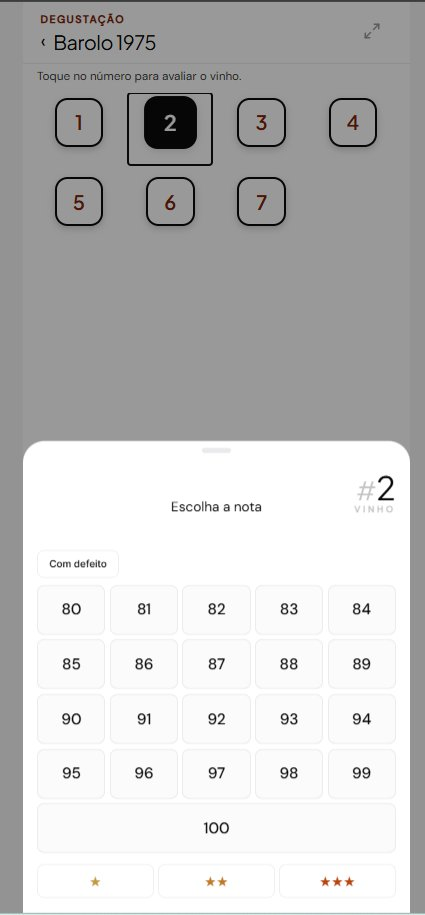
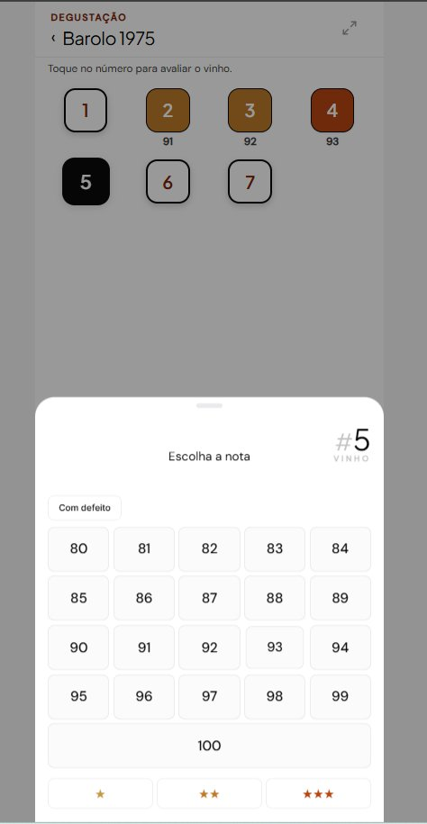
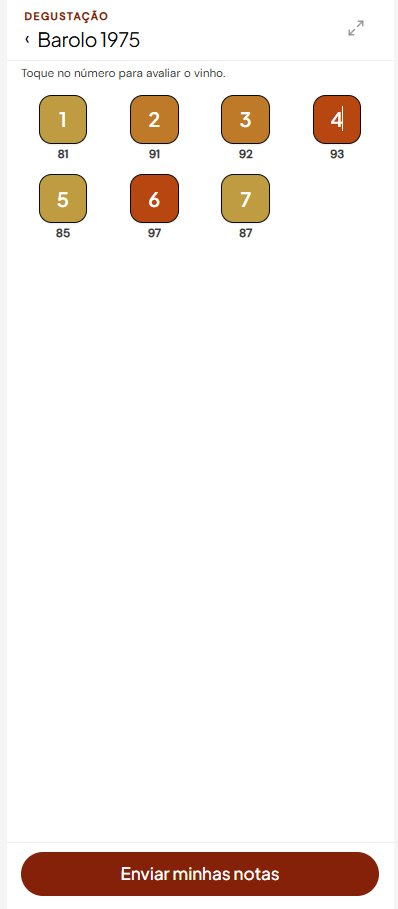
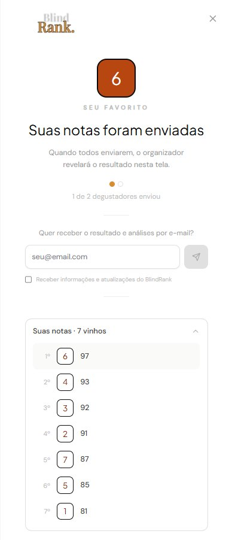

Momento um
Toque no número, escolha a nota.
Cada vinho aparece só por número. O degustador toca, o painel sobe, dá a nota e passa para o próximo. Funciona à meia-luz de restaurante.


Define quantos vinhos, se será às cegas ou às claras, o método de avaliação (nota ou ranking) e a escala (10, 20 ou 100 pontos). Um PIN único é gerado para compartilhar com a mesa.
Sem cadastro, sem app para instalar. Cada um avalia no próprio celular, às cegas, sem saber o que os outros estão dando.
Quando todos terminam, o sistema compila o resultado do grupo. Você revela os rótulos no momento que escolher. A degustação fica registrada para sempre.
Para confrarias que querem organizar uma degustação sem depender de planilha. Para sommeliers que querem conduzir com rigor sem precisar anotar a nota de cada participante. Para importadores que precisam registrar os preferidos dos seus consumidores nos eventos que organizam.
Para quem quer promover uma degustação sem transformar o evento em trabalho administrativo.
Cada vinho aparece só por número. O degustador toca, o painel sobe, dá a nota e passa para o próximo. Funciona à meia-luz de restaurante.

O degustador atribui suas notas, vinho a vinho, sem nenhum trabalho extra. Sem planilha, sem confusão, sem anotações perdidas no guardanapo do restaurante.

Quando termina de avaliar, o degustador envia suas notas. O organizador revela os rótulos no momento que decidir. Todos descobrem juntos.

A criação leva dois minutos. A degustação leva o tempo do jantar. O resultado fica para sempre.